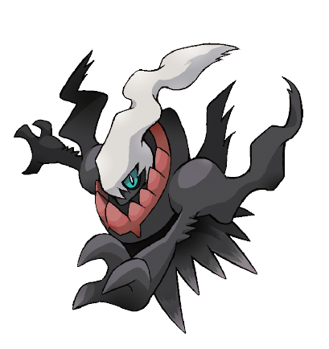

¡Deposita tres robustos Pokémon en el Banco de Pokémon!
A partir del 4 de marzo, los usuarios del Banco de Pokémon pueden hacerse con Regirock, Regice y Registeel.
¡No pierdas la oportunidad de hacerte con este increíbles Pokémon`s legendarios mientras puedas!
|
 |
Aquellos jugadores que accedan a su Banco de Pokémon entre el 4 de marzo y el 31 de octubre de 2016 recibirán un Regirock, un Regice y un Registeel, ¡cada uno con una habilidad oculta! Estos tres Pokémon pueden recibirse usando la función del Nexo Pokémon en el juego de Pokémon X, Pokémon Y, Pokémon Rubí Omega o Pokémon Zafiro Alfa que se haya usado para acceder a tu Banco de Pokémon. Ten en cuenta que el Banco de Pokémon requiere una cuota anual de membresía de 4,99 €.
Puedes conseguir el trío de Pokémon seleccionando la opción del Nexo Pokémon en la pantalla del menú de tu juego de Pokémon X, Pokémon Y, Pokémon Rubí Omega o Pokémon Zafiro Alfa. Una vez que hayas recibido estos Pokémon en el Banco de Pokémon, selecciona Nexo Pokémon, y los tres Pokémon serán enviados a una caja de tu juego. Los tres Pokémon serán enviados de uno en uno desde el Banco de Pokémon. Ten en cuenta que solo puedes recibir estos Pokémon una vez por cada cuenta del Banco de Pokémon, incluso si tienes múltiples copias de Pokémon X, Pokémon Y, Pokémon Rubí Omega o Pokémon Zafiro Alfa.
Cada uno de los tres Pokémon que recibas tendrá una habilidad oculta, algo que no poseen cuando se encuentran en Pokémon Rubí Omega y Pokémon Zafiro Alfa. Esta es tu primera oportunidad de hacerte con estos Pokémon con sus habilidades ocultas, ¡así que no pierdas esta oportunidad!
¡Darkrai es el Pokémon de tus sueños!
Del 1 al 24 de Mayo de 2016 |Disponible en GAME
Apareciendo por primera vez en Pokémon Diamante y Pokémon Perla, el singular Darkrai ha arrojado una gran sombra sobre el mundo Pokémon. ¡El poderoso Pokémon Oscuridad vuelve para la celebración de los 20 años de Pokémon, esta vez por medio de un evento de distribución especial en tiendas participantes de Game! Con un set de movimientos impresionante y la habilidad Mal Sueño, Darkrai ocasionará, con toda seguridad, pesadillas a tus rivales.
El Pokémon singular Darkrai estará disponible en tiendas participantes de Game a partir del 1 de mayo de 2016. Visita Game para recoger un código que desbloqueará a Darkrai en tu juego de Pokémon Rubí Omega, Pokémon Zafiro Alfa, Pokémon X o Pokémon Y. ¡Podrás canjear este código en tu juego hasta el 31 de agosto de 2016!
|


|